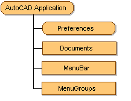

Autodesk AutoCAD 2021: ActiveX Developer's Guide > ActiveX Automation Basics > About the AutoCAD Object Model (VBA/ActiveX) >
The Application object is the Root object for the AutoCAD ActiveX Automation Object Model.
From the Application object, you can access any of the other objects, or the properties or methods assigned to any object.
For example, the Application object has a Preferences property that returns the Preferences object. This object provides access to the registry-stored settings in the Options dialog box. (Drawing-stored settings are contained in the DatabasePreferences object, which will be discussed later.) Other properties of the Application object give you access to application-specific data such as the application name and version, and the AutoCAD size, location, and visibility. The methods of the Application object perform application-specific actions such as listing, loading, and unloading ADS and ARX applications, and quitting AutoCAD.
The Application object also provides links to the AutoCAD drawings through the Documents collection, the AutoCAD menus and toolbars through the MenuBar and MenuGroups collections, and the VBA IDE through a property called VBE.

The Application object is also the Global object for the ActiveX interface. This means that all the methods and properties for the Application object are available in the global name space.